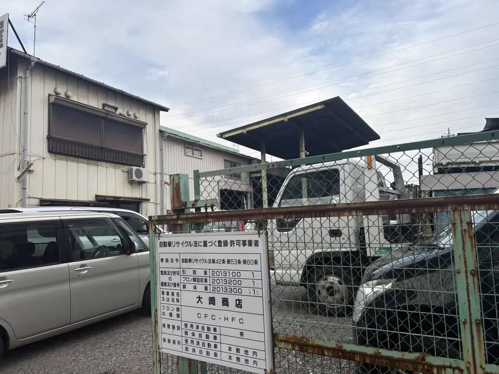

年度末の廃車を考えている方へ
3月中に廃車した方がいい理由
4月1日の自動車税と、間に合わせるコツ
公開
こんにちは、東京都足立区江北で自動車解体・廃車買取をしている「大崎商店 環七店」です。
「乗らなくなった車、3月中に廃車にした方がいいって聞いたけれど、どうして？」
「4月になってしまったら、損をする？」
「間に合わせるには、いつまでに動けばいい？」
年度末が近づくと、こんなご相談をいただきます。
結論からお伝えすると、自動車税・軽自動車税は、原則として毎年4月1日時点の所有者にかかる税金です。そのため、もう乗らない車は、3月中に廃車の手続きまで終わらせると、翌年度分の課税を避けられます（その後、再登録などをしない場合）。
この記事では、3月中に廃車にしたほうがよい理由と、間に合わせるコツを、やさしくご紹介します。後半では、足立区の大崎商店の場合もご紹介します。
① 税金は、「4月1日の所有者」にかかります

車にかかる毎年の税金は、次の2つです。どちらも、毎年4月1日（賦課期日）を基準に、課税されます。
- 自動車税（普通車）：都道府県の税金。東京都は、都税です
- 軽自動車税（軽自動車）：市区町村の税金
2026年4月から、従来の「自動車税（種別割）」「軽自動車税（種別割）」は、それぞれ「自動車税」「軽自動車税」に名称が変わっています。
4月1日時点の所有者が、その年度の納税義務者となるのが原則です。販売店やローン会社が所有権を留保している場合は、使用者が納税義務者になります。
3月中に普通車の抹消登録、軽自動車の自動車検査証返納届などを完了し、その後再登録などをしなければ、4月から始まる翌年度分の課税を避けられます。車を売却・譲渡しても登録名義が残っている場合があるため、引き渡しただけで手続きが終わったと思わないようにしましょう。
② 普通車と軽自動車で、4月以降の税負担が違います
3月末までに手続きを終えた場合と、4月以降になった場合を比べると、普通車と軽自動車では次の違いがあります。以下は、同じ年の3月・4月・5月以降に手続きを完了した場合に、4月から始まる新年度分がどう変わるかを比べた表です。手続き後の再登録などはしないものとします。
| 手続きが終わった時期 | 普通車（自動車税） | 軽自動車（軽自動車税） |
|---|---|---|
| 3月中 | 新年度分はかからない | 新年度分はかからない |
| 4月中 | 4月分の1か月分が、かかる（5月以降の分は、月割りで減額・還付） | 1年分の全額が、かかる |
| 5月以降 | 抹消した月まで、月割りで、かかる | 1年分の全額が、かかる |
- 普通車：抹消登録をした月の翌月から年度末までの分が、月割りで、減額・還付されます（納付前なら減額、納付済みなら還付）。4月中に抹消登録を完了すれば、負担は4月分の1か月分です。5月以降なら、抹消した月までの分がかかります。未納の税金がある場合は、還付金が充当されることもあります
- 軽自動車：月割りで戻る制度が、ありません。4月以降に手続きすると、1年分の全額がかかります
「3月中に」が、とくに大切なのは、軽自動車です。くわしくは、軽自動車は自動車税の還付がない？普通車との違いと、損しない廃車のタイミングの記事をご覧ください。普通車の還付については、廃車にするとお金は戻ってくる？自動車税・重量税・自賠責の還付金の記事をご覧ください。
③ 「3月中」は、廃車の手続きが終わった日で考えます
税金の区切りを考えるときは、引き取り日ではなく、普通車の抹消登録・軽自動車の返納手続きが完了した日を確認します。車を解体した日や、還付金が振り込まれた日とも別です。
たとえば、3月31日に車を引き取ってもらっても、手続きが4月になった場合は、その年度の税金がかかることがあります。
手続きができるのは、窓口が開いている平日の日中です。普通車の運輸支局も、軽自動車検査協会も、土日・祝日はお休みです。足立ナンバーの普通車の登録窓口と軽自動車検査協会 足立支所の手続きの受付時間は、8:45〜11:45、13:00〜16:00です。受付時間や休業日は、利用する窓口の公式案内も確認してください。
- 3月の最終受付日は、その年のカレンダーで、確認しましょう（3月31日が土日の場合は、前の平日が最終になります）
- 午後に書類がそろうと、手続きは翌日になることがあります
- 3月、特に下旬は、運輸支局の登録・検査窓口が大変混雑します。 東京運輸支局も、例年長時間の待ち時間が生じると案内しています。月末ぎりぎりの依頼は避け、早めに相談しましょう
④ 3月中に間に合わせる、5つのコツ
- 2月のうちに、依頼先に相談する：3月に入ってからでは、日数に余裕がなくなります
- 車検証と、ナンバープレートの有無を、先に確認する
- 所有者が誰か、確認する：ご自身か、ローン会社か、亡くなった方かで、準備が変わります。くわしくは、名義が家族・知人のままの車を廃車したい｜所有者と使用者が違うときの進め方の記事をご覧ください
- 普通車の印鑑証明書は、申請予定日を確認してから取る：基本は申請日に発行から3か月以内のものです。軽自動車の通常の廃車では、印鑑証明書や実印は不要です。くわしくは、廃車に必要な印鑑証明書は何通？いつまでのものが使える？の記事をご覧ください
- 依頼先に、「3月中に手続きを終えたい」と、最初に伝える：間に合うかどうか、見通しを確認できます
⑤ 解体を待つと、間に合わないときは？
普通車を解体してから行う「永久抹消登録」や、軽自動車の「解体返納」は、解体と解体報告が済んだあとでないと、申請できません。 解体の作業状況によっては、年度末に間に合わない場合があります。
その場合は、先に一時抹消（軽自動車は、自動車検査証返納届（一時使用中止））を行う方法があります。登録・使用を先に止めて、解体はあとで行います。一時抹消のあとに解体した場合は、「解体届出」を行います。
ただし、重量税の還付は、適正な解体後の永久抹消登録・解体返納・解体届出と同時に申請するものです。制度上の車検残存期間が1か月以上あることなどの条件もあります。一時抹消だけでは、還付の対象になりません。くわしくは、「一時抹消」と「永久抹消」の違いをやさしく解説｜廃車はどちらを選ぶ？の記事をご覧ください。
どの方法が合うかは、車の状態や、ご希望の期限によって異なるため、依頼先に相談してください。
よくある質問
Q. 3月中に廃車にしないと、損をしますか？
A. 4月1日時点で課税対象なら、軽自動車は1年分がかかり、年度途中に廃車にしても月割り還付はありません。普通車は抹消した月までの分がかかるため、4月中に抹消すれば1か月分、5月なら2か月分です。まだ使う予定がある場合は、税額だけでなく車の必要性も含めて判断しましょう。
Q. 4月1日に、廃車の手続きが終わりました。その年度の税金はかかりますか？
A. 4月1日の時点で所有していれば、その年度の税金の対象になります。3月中に終わらせるのが、安心です。
Q. 軽自動車の車検を4月10日に通したら、その年度の軽自動車税はかかりますか？
A. 車検の更新日ではなく、4月1日時点の所有・登録などの状況で判断します。 登録を残したまま車検が切れていた車を4月10日に継続検査に通す場合は、その年度分がかかります。車検切れや、車を使っていないことだけでは課税は止まりません。一方、4月2日以降に新たに取得し、新規登録する軽自動車は、原則として翌年度から課税されます。
Q. 4月1日にナンバープレートがなければ、軽自動車税はかかりませんか？
A. ナンバープレートの現物の有無だけでは判断できません。 取り外したり紛失したりしても、返納・廃車等の手続きをしていなければ、課税は止まりません。また、同じ所有者が一時使用中止のあと再登録する場合は、所有の継続などによって課税されるケースを案内している自治体もあります。「3月に返納して4月に再登録すれば必ず非課税」とは考えず、定置場のある市区町村へ確認してください。
Q. 3月31日に、車を引き取ってもらいました。税金は大丈夫ですか？
A. 引き取り日だけでは判断できません。普通車の抹消登録・軽自動車の返納手続きの完了日を、依頼先に確認してください。手続きが4月にずれ込む場合は、その年度の税金がかかることがあります。
Q. 3月の窓口は、混んでいますか？
A. はい。3月、特に下旬は大変混雑します。 東京運輸支局も公式に案内しています。書類の不備があって申請し直すことも考え、月末ぎりぎりにならないよう、早めに相談・準備しましょう。
Q. 車検が残っていますが、3月中に廃車にしたほうがいいですか？
A. 車を使う予定がない場合は、税金と今後の維持費を合わせて検討しましょう。重量税の還付には適正な解体と同時申請、制度上の車検残存期間が1か月以上あることなどが必要です。引き取り日に1か月残っていれば必ず戻るわけではないため、依頼先へ確認してください。
Q. 車を手放した後も、税金の通知書が届きました。
A. 手続きが終わっているかどうか、また、所有者としての登録が残っていないかを、確認してください。通知書の内容は、お住まいの都道府県・市区町村の税の窓口にお問い合わせください。
大崎商店の場合：3月中の廃車
ここからは、足立区の大崎商店の場合をご紹介します。

車の引き取り・買取に伴う廃車手続きを、お受けしています。車をお預かりせず、書類手続きだけを代行する依頼は受け付けていません。
3月末までに終わらせたいなど、期限がある場合は、お電話の際に、最初にお伝えください。 間に合うかどうか、見通しを確認できます。
- 先に一時抹消の手続きを行う場合は、書類がそろっていれば、引き取りから原則1週間以内に対応します。早い場合は、当日か翌日です。窓口の受付が16時までのため、午後の引き取りは翌日以降になることがあります。祝日が続くときは、1週間以内をお約束できないことがあります
- 車を解体して廃車にする場合は、解体の認可を受けた入谷店で解体し、普通車の永久抹消登録、または一時抹消済みの場合の解体届出（軽自動車は解体返納・解体届出）を進めます。永久抹消は、入谷店の作業状況によって、日数が変わります
- 解体後の手続きでは年度末に間に合わない見通しの場合は、先に一時抹消（軽自動車は一時使用中止）を行う方法も、ご相談ください
期限内の完了を保証するものではありません。 依頼時に、引き取り日と申請予定日を確認してください。
お電話の際は、次の内容をお伝えください。
- 車検証（または自動車検査証記録事項）の内容と、車検の期限
- 自賠責保険の満期がわかれば、その日
- 車種・車の状態・車が置いてある場所
- 「3月中に終わらせたい」という、ご希望の期限
大崎商店では、
- 解体費用・手続き代行費用・印紙代は別請求しません
- 足立区内は、引き取り無料
- 足立区外も、買取価格がつかない車は、環七店から片道約30分圏内は引き取り無料
- 買取価格がつく車は、圏外でも、所在地と車の状態によっては無料で引き取り（事前にご案内します）
- 車のお持ち込みは、どこからでも歓迎（基本は環七店。日時は、事前にお電話でご相談ください）
3月中の廃車のことも、大崎商店にご相談ください
電話で相談する 03-3854-4141メールで相談する（フォーム）ご来店の前に、お電話ください。引き取りなどで外出していることもあり、お電話いただければ、即日対応できるかをご案内できます。
大崎商店 環七店
電話：03-3854-4141
〒123-0872
東京都足立区江北7丁目1−3
営業時間：月〜土 10:00〜18:00
休業日：日曜・祝日
環七沿い／舎人ライナー
西新井大師西駅
大崎商店 入谷店
電話：03-3899-2837
〒121-0836
東京都足立区入谷7丁目5−11
営業時間：月〜土 9:30〜17:30
休業日：日曜・祝日・第2土曜
引き取りやご相談のお電話は、環七店がスムーズです。お電話の際は、「3月中に廃車にしたい」とお伝えください。車検証（または自動車検査証記録事項）をお手元にご用意いただくと、ご案内がスムーズです。
※掲載のイラストはAIで作成したイメージです。実際の店舗・役所の窓口を撮影したものではありません。
参考：習志野市・車検切れの軽自動車の課税Q&A／新城市・軽自動車税（新規登録日による扱い）／高梁市・軽自動車税Q&A（同一所有者の再登録）／国税庁・自動車重量税の廃車還付制度／東京運輸支局・登録窓口の受付時間／東京都主税局・自動車税のよくある質問／足立区・軽自動車税／兵庫県・2026年4月の税名称変更／軽自動車検査協会・東京主管事務所足立支所／軽自動車検査協会・自動車検査証返納届（一時使用中止）／軽自動車検査協会・解体返納